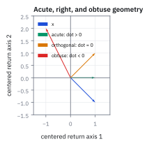
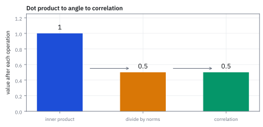
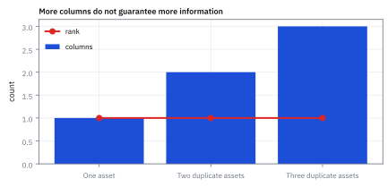

4.5 Rank, Range, and Invertibility
ดูว่าการแปลงเก็บข้อมูลไว้ครบหรือทำข้อมูลหาย
ถ่ายรูปสีแล้วใช้ฟิลเตอร์รวมทุกสีให้เหลือสีเทา ดูภาพเทาเพียงอย่างเดียวจะกู้ค่าสีแดงกับน้ำเงินเดิมได้ทุกภาพไหม?
เฉลย: ไม่ได้ ถ้าภาพแดงล้วนกับน้ำเงินล้วนให้สีเทาเดียวกัน input สองแบบถูกบีบเป็น output เดียว ข้อมูลบางส่วนหายไปแล้ว
rank บอกจำนวนทิศทางข้อมูลที่ matrix ยังส่งต่อได้, range คือผลลัพธ์ที่สร้างได้, invertibility คือการย้อนหา input ได้หนึ่งเดียว ใช้ตรวจว่า model ทำข้อมูลหายหรือไม่
ฟิลเตอร์ที่ลืมสีไม่ใช่นักสืบ ต่อให้ซูมก็จำวันที่หายไปไม่ได้ งาน quant ตรวจ rank ก่อนแก้ระบบหรือสร้าง hedge ที่ต้องระบุตัวแปรได้ชัด
ศัพท์ที่ใช้ในหัวข้อนี้
- rank
- จำนวนทิศทางข้อมูลที่ independent จริงใน matrix ใช้วัด information ที่ matrix มีและตรวจ redundancy
- range
- เซตของ output ทั้งหมดที่ matrix สร้างได้จาก input ทุกตัว ใช้รู้ว่า target อยู่ในความสามารถของ mapping หรือไม่
- invertibility
- คุณสมบัติที่มี inverse ซึ่งคืน input จาก output ได้อย่าง unique ใช้แก้ระบบสมการและคำนวณ hedge weights
- singular matrix
- matrix ที่ rank ต่ำกว่าขนาดและไม่มี inverse ใช้เป็นสัญญาณว่า data มี redundant direction หรือ covariance มี zero-risk direction
- null space
- เซตของ input ที่ถูก matrix map ไปเป็นศูนย์ ใช้หา position combinations ที่ mapping มองไม่เห็น
- covariance matrix
- ตาราง covariance ระหว่าง asset returns ใช้คำนวณ portfolio variance และ risk allocation
- variance
- ค่าเฉลี่ยของ squared deviation จาก mean ใช้วัดการกระจายของ return และคำนวณ portfolio risk
- QQQ
- กองทุนที่ติดตาม Nasdaq-100 ในตลาดสหรัฐฯ ใช้เป็น asset ตัวอย่างที่อาจซ้ำซ้อนกับหุ้น technology รายตัว
สัญลักษณ์ที่ใช้ในหัวข้อนี้
| สัญลักษณ์ | ความหมาย | หน่วย |
|---|---|---|
| $A$ | matrix ของ observations หรือ exposures | ตาม quantity ที่วัด |
| $\operatorname{rank}(A)$ | จำนวน independent directions ของ $A$ | นับทิศทาง |
| $\mathcal R(A)$ | range หรือ column space ของ $A$ | space ของ output |
| $A^{-1}$ | inverse เมื่อมีอยู่ | inverse ของหน่วย $A$ |
| $\Sigma$ | covariance matrix ของ daily returns | (decimal return)² ที่ horizon หนึ่งวัน |
| $r$ | vector ของ asset returns | decimal return ในหนึ่งวัน |
| $\hat{\mu}$ | vector ของ excess return ของสินทรัพย์ | decimal return |
| $z$ | vector ใน null space ที่ส่งผลลัพธ์เป็นศูนย์ | unitless weight |
ที่มาที่ไป: เมื่อการแปลงทำข้อมูลหายไปอย่างเงียบ ๆ
ปัญหาที่ทำให้ต้องมีหัวข้อนี้เกิดขึ้นจริงในงานจัดพอร์ตแทบทุกที่ คือเมื่อจำนวนสินทรัพย์มากกว่าจำนวนวันที่มีข้อมูล
ในสถานการณ์นั้น ตารางความเสี่ยงที่คำนวณได้จะกลับด้านไม่ได้ในทางคณิตศาสตร์ แต่โปรแกรมจะไม่ฟ้อง มันจะคายตัวเลขออกมาให้ตามปกติ เพราะการปัดทศนิยมทำให้ดูเหมือนกลับได้
ผลคือน้ำหนักพอร์ตที่ได้ออกมาสุดโต่งอย่างไร้เหตุผล และเปลี่ยนไปคนละเรื่องเมื่อข้อมูลขยับนิดเดียว โดยที่ไม่มีข้อความเตือนใด ๆ เลย
หัวข้อนี้ให้เครื่องมือที่ตรวจอาการนั้นได้ก่อนที่จะเสียเวลาไปกับคำตอบที่ไร้ความหมาย
ความเป็นมา: จากการแก้ระบบสมการสู่ปัญหา rank deficiency ในพอร์ตการลงทุน
Carl Friedrich Gauss ในช่วงปี 1809 ได้พัฒนา Gaussian elimination เพื่อคำนวณวงโคจรดาวเคราะห์น้อย Ceres ในดาราศาสตร์ ต่อมา Camille Jordan ในปี 1870 และ Ferdinand Georg Frobenius ในปี 1879 ได้บัญญัติคำว่า rank ขึ้นเพื่อระบุมิติสูงสุดของแถวหรือคอลัมน์ที่เป็น linearly independent ต่อกันอย่างแท้จริง
ก่อนหน้า Frobenius นักคณิตศาสตร์ตัดสินว่าระบบสมการหาคำตอบได้หรือไม่โดยพึ่งพา determinant เพียงอย่างเดียว ซึ่งใช้ได้เฉพาะกับ square matrix เท่านั้น และไม่สามารถบอกได้ว่าในกรณีทั่วไปมีข้อมูลสูญหายไปกี่มิติ Rank จึงเข้ามาทำหน้าที่แทนโดยให้ข้อมูลครอบคลุม matrix ทุกขนาดผ่านมิติของ range
ในโลกการเงิน Harry Markowitz แสดงว่าการหาน้ำหนักพอร์ตที่เหมาะสมจำเป็นต้องหา inverse ของ covariance matrix แต่เมื่อจำนวนสินทรัพย์มีมากกว่าจำนวนวันที่มีข้อมูล ย่อมเกิดภาวะ rank deficiency ที่สร้าง null space ปลอมขึ้นมา ทำให้ optimizer สับสนและใส่ leverage มหาศาลในทิศทางที่ไร้ความหมาย
Worked Example — โจทย์และสิ่งที่ให้มา
โจทย์ให้อะไรมาบ้าง: ให้ columns ของ $A$ เป็น daily returns ของ AAPL, MSFT และ QQQ และให้ $\Sigma$ เป็น covariance matrix ของ returns หน่วยของแต่ละ return เป็น decimal over one day และหน่วย covariance เป็น decimal-return squared ที่ horizon หนึ่งวัน ถ้า columns มี linear dependence ข้อมูลจะมี rank ต่ำและ inverse ที่ระบบต้องการอาจไม่มี
ขั้นที่ 1 — ฟิลเตอร์สีเทาจากประโยคเปิดเรื่อง: การแปลงที่ย้อนกลับไม่ได้ หน้าตาเป็นอย่างไร
ลองกับฟิลเตอร์ที่รวมสีแดงกับน้ำเงินเป็นสีเทาก่อน มันคือตารางแถวเดียว ใส่ภาพสองแบบเข้าไปแล้วดูว่าแยกออกไหม
ภาพแดงล้วน $(1,0)$ กับน้ำเงินล้วน $(0,1)$ ให้สีเทา 0.5 เท่ากัน เห็นแค่ 0.5 จึงบอกไม่ได้ว่ามาจากภาพไหน ข้อมูลหายไปหนึ่งทิศ
บรรทัดสุดท้ายคือทิศที่หายไป: $(1,-1)$ ถูกบีบเป็นศูนย์ เติมมันเข้าไปใน input เท่าไรก็ได้ output ไม่เปลี่ยน ทิศแบบนี้เรียกว่า null space และตราบใดที่มันมี การย้อนกลับก็ทำไม่ได้
ตารางนี้มีสองคอลัมน์แต่ส่งข้อมูลต่อได้แค่หนึ่งทิศ จำนวนทิศที่ส่งต่อได้คือ rank ซึ่งตรงนี้เท่ากับ 1
ขั้นที่ 2 — นิยามของ rank: นับทิศที่เหลือรอดหลังการแปลง
บรรทัดนี้เป็น นิยาม ของตัวเลขที่เราจะใช้ตอบคำถามหลัก คำถามคือการแปลงนี้ทำข้อมูลหายไปหรือเปล่า และเราวัดมันด้วยจำนวนทิศทางอิสระที่ยังเหลืออยู่ ในฝั่งผลลัพธ์ ถ้าคอลัมน์ไหนซ้ำกับคอลัมน์อื่น มันไม่ได้เพิ่มทิศใหม่ จึงไม่ถูกนับ
rank ของ $A$ คือ dimension ของ range หรือ column space; ถ้า columns independent rank จะเท่าจำนวน columns แต่ถ้ามี column ซ้ำ rank จะลดลง
ขั้นที่ 3 — เงื่อนไข invertibility
ถ้าไม่ทำข้อมูลหาย ก็ย้อนกลับได้ เจ็ดบรรทัดนี้ทำให้ประโยคนั้นตรวจได้ โดยเดินทั้งสองทางของเครื่องหมายเท่ากับ ทางแรกบอกว่าอะไรพังเมื่อทิศไม่ครบ ทางที่สองบอกว่าอะไรใช้ได้เมื่อทิศครบ ขั้นถัดไปจะกางทางแรกให้เห็นเป็นตัวเลข
อ่านสัญลักษณ์ก่อน: $\exists$ คือมีอยู่ $\nexists$ คือไม่มี $\exists!$ คือมีอยู่เพียงแบบเดียว และ $\forall$ คือสำหรับทุกค่า
ทางแรกดูว่าอะไรพังเมื่อทิศไม่ครบ: จะมีทิศที่ถูกบีบจนเหลือศูนย์ บวกทิศนั้นเข้าไปใน input เท่าไรก็ได้ ผลลัพธ์ไม่ขยับเลย จึงมี input สองตัวที่ต่างกันแต่ให้ผลเดียวกัน การย้อนกลับจากผลลัพธ์จึงเลือกไม่ถูกว่าจะเป็นตัวไหน นั่นคือความหมายของคำว่าไม่มีตัวย้อนกลับ
ทางที่สองกลับกัน: เมื่อทิศครบ คอลัมน์ปูเต็มปริภูมิผลลัพธ์ ทุกเป้าหมายจึงเขียนได้ และเขียนได้แบบเดียว พอจับคู่กันหนึ่งต่อหนึ่งทั้งสองทาง ตัวย้อนกลับก็มีอยู่จริง
ขั้นที่ 4 — null space ทำให้ solution ไม่ unique
ถ้าทำข้อมูลหาย จะมีทิศทางที่ถูกบีบเป็นศูนย์ ห้าบรรทัดนี้แสดงผลที่ตามมาทีละก้าว ในงานจริงนี่คือสาเหตุที่ optimizer คืนน้ำหนักพอร์ตคนละชุดทุกครั้งที่รัน ทั้งที่ข้อมูลเดิม เพราะ covariance ที่ป้อนเข้าไปมีทิศที่ซ้ำกัน
สมมติว่ามีทิศที่ไม่เป็นศูนย์ แต่ถูกการแปลงบีบจนเหลือศูนย์ แล้วดูว่าเกิดอะไรขึ้น การแปลงกระจายเข้าไปในผลบวกได้ และดึงตัวคูณออกมาข้างหน้าได้ ทั้งสองข้อมาจากนิยามในหัวข้อ 4.3
พอแทนสมมติฐานลงไป ก้อนที่เติมเข้ามากลายเป็นศูนย์ ไม่ว่าจะใส่ทิศนั้นเข้าไปแรงแค่ไหน ผลลัพธ์ก็ไม่ขยับเลย จึงมี input เป็นอนันต์ที่ให้คำตอบเดียวกัน นั่นคือความหมายของคำว่าคำตอบไม่ unique และในงานจริงคือสาเหตุที่ optimizer คืนน้ำหนักคนละชุดทุกครั้งที่รัน ทั้งที่ข้อมูลเดิม
ขั้นที่ 5 — covariance ที่ singular
ปัญหานี้เกิดจริงบนโต๊ะเมื่อจำนวนสินทรัพย์มากกว่าจำนวนวันที่มีข้อมูล และเป็นเหตุผลที่ต้องมี shrinkage ในบทหลัง
$\sigma^2$ คือ variance ของ daily return หน่วย decimal-return squared เมื่อสอง returns เหมือนกันทุกครั้ง covariance matrix มี determinant เป็นศูนย์และ rank หนึ่ง จึงไม่มี inverse
ทำไม determinant ศูนย์แปลว่ากลับด้านไม่ได้ (กรณี 2×2): $\det=ad-bc$ เป็นศูนย์ก็ต่อเมื่อคอลัมน์ $(a,c)$ กับ $(b,d)$ ขนานกัน คือคอลัมน์หนึ่งเป็นตัวคูณของอีกคอลัมน์ ที่นี่ $1\cdot1-1\cdot1=0$ และคอลัมน์ทั้งสองคือ $(1,1)$ เหมือนกันเป๊ะ ฟิลเตอร์สีเทาในขั้นที่ 1 ก็เป็นเรื่องเดียวกัน
ขั้นที่ 6 — เมื่อกลับได้ ก็เขียนตัวกลับของ $2\times2$ ออกมาตรง ๆ
ขั้นที่ 3 ตอบว่ากลับได้เมื่อไร ขั้นนี้ตอบว่ากลับแล้วหน้าตาเป็นอย่างไร สำหรับ $2\times2$ ซึ่งเป็นขนาดที่ต้องคำนวณด้วยมือบ่อยที่สุด ทั้งในหัวข้อ 7.1, 8.5 และ 17.3
ตัวกลับไม่ได้มาจากการท่องจำ มันคือคำตอบของคำถามว่า ต้องคูณอะไรถึงจะได้หลักแรกของ identity กลับมา จึงตั้งเป็นระบบสมการสองบรรทัดแล้วแก้ตรง ๆ
วิธีแก้คือกำจัดตัวแปรทีละตัว คูณไขว้แล้วลบกัน ตัวที่ไม่ต้องการหายไป และสิ่งที่โผล่ขึ้นมาเป็นตัวคูณหน้าตัวแปรทั้งสองรอบคือ $ad-bc$ ก้อนเดียวกัน
ก้อนนั้นคือ determinant และตรงนี้เองที่เห็นว่าทำไมมันสำคัญ ถ้ามันเป็นศูนย์ สมการกลายเป็น $0=d$ ซึ่งแก้ไม่ได้ ตรงกับขั้นที่ 3 ที่บอกว่า rank ไม่เต็มแล้วกลับไม่ได้ ไม่ใช่กฎสองข้อ แต่เป็นข้อเดียวกันมองคนละมุม
ทำซ้ำกับหลักที่สองของ identity จะได้อีกสองช่องที่เหลือ ประกอบกันเป็นรูปที่จำง่าย สลับแนวทแยง กลับเครื่องหมายนอกแนวทแยง แล้วส่วนด้วย determinant
ขั้นที่ 7 — Drill: กลับ covariance $2\times2$ แล้วกาง quadratic form
ตรวจเองใน 20 วินาที: $\det$ ต้องได้ 1, ผลคูณกลับต้องได้ identity, และพจน์ไขว้ต้องเป็นลบสองเท่า ถ้าเครื่องหมายนอกแนวทแยงหลุด quadratic form จะกลายเป็นบวก ซึ่งแปลว่าสองสินทรัพย์สวนทางกันแทนที่จะไปด้วยกัน
ลองกับตัวเลขจริงหนึ่งรอบ แล้วรูปแบบจะติดมือ determinant ของ $2\times2$ คือคูณแนวทแยงหลักลบคูณแนวทแยงรอง ได้ 1 พอดี ซึ่งทำให้ตัวหารหายไปและอ่านคำตอบได้ทันที
อย่าข้ามบรรทัดที่สาม คูณกลับเพื่อตรวจว่าได้ identity จริง ใช้เวลาสิบวินาที และจับความผิดพลาดเรื่องเครื่องหมายได้เกือบทุกครั้ง
สองบรรทัดล่างกาง quadratic form ออกเป็นพหุนาม คูณจากขวาไปซ้ายก่อนเพื่อให้เหลือ vector เดียว แล้วค่อยจับคู่กับ $x^{\mathsf T}$ พจน์ไขว้โผล่สองครั้งเท่ากัน จึงรวมเป็นสองเท่า
ก้อนสุดท้ายนี้คือสิ่งที่ไปนั่งอยู่ในเลขชี้กำลังของ density ในหัวข้อ 7.1 ใครกางมันได้ในหัว ก็เขียน density ของ normal สองตัวแปรออกมาได้โดยไม่ต้องเปิดตำรา
ขั้นที่ 8 — การคำนวณน้ำหนักพอร์ตผ่าน inverse และผลกระทบเมื่อ matrix ขาด rank
ตัวอย่างนี้แสดงบทบาทของ invertibility ในการคำนวณพอร์ต Mean-Variance โดย $\Sigma$ คือ covariance matrix ขนาด $2\times 2$ และ $\hat{\mu}$ คือ excess return
เงื่อนไขบังคับคือ matrix ต้องเป็น full rank ซึ่งตรวจได้จาก determinant ที่ต้องไม่เป็นศูนย์ หาก rank บกพร่อง inverse จะไม่มีอยู่จริง และสมการหาน้ำหนักพอร์ตจะไม่มีคำตอบเดียว ในโปรแกรมคำนวณทั่วไป ความพยายามหา inverse ของ matrix ที่ singular จะส่งผลให้น้ำหนักพุ่งเข้าสู่อินฟินิตี้และพอร์ตพังทลาย
เมื่อ covariance matrix มี full rank เราสามารถหา determinant ซึ่งได้ 0.0016 และกลับ matrix ได้อย่างแม่นยำ น้ำหนักพอร์ตที่ได้จะสะท้อนผลตอบแทนส่วนเกินเทียบกับความเสี่ยงจริง
เมื่อคูณ inverse เข้ากับ vector ของ excess return ตัวเลขจะถูกจัดสรรไปยังสินทรัพย์ตัวแรกทั้งหมด 2.0 หน่วย และไม่ถือสินทรัพย์ตัวที่สองเลย เพราะสินทรัพย์ตัวแรกให้ผลตอบแทนคุ้มค่าความเสี่ยงกว่า
หากสินทรัพย์ทั้งสองเคลื่อนไหวซ้ำซ้อนกันจน determinant เป็นศูนย์ matrix จะกลายเป็น singular ทันที ทิศทาง $z = [1, -1]^{\mathsf T}$ จะกลายเป็น null space ที่ variance เป็นศูนย์ ทำให้ไม่สามารถหา inverse ได้และระบบจัดสรรพอร์ตจะล้มเหลว
แล้วเอาไปใช้ทำอะไรได้จริงบ้าง
การรู้ว่าการแปลงทำข้อมูลหายหรือไม่ ป้องกันความผิดพลาดที่หาสาเหตุยากที่สุด
ใช้ตรวจว่า covariance ที่ประมาณมาใช้งานได้จริงหรือไม่ ก่อนจะเอาไปกลับด้านในการจัดพอร์ต
ใช้บอกว่าปัญหามีคำตอบเดียวหรือมีหลายคำตอบ ซึ่งถ้ามีหลายคำตอบแปลว่าต้องเพิ่มเงื่อนไข
ใช้วินิจฉัยเวลาผลลัพธ์ของการจัดพอร์ตเหวี่ยงแรงผิดปกติ ซึ่งมักเกิดจากตารางที่เกือบกลับด้านไม่ได้
Figure 4.5a — rank deficiency as collinear columns

column สองเป็นสองเท่าของ column หนึ่งทุก observation จุดทั้งหมดจึงอยู่บนเส้นเดียว แม้ matrix มีสอง columns แต่มี independent direction เพียงหนึ่ง
Figure 4.5b — range and null direction

สำหรับ symmetric map $A=\begin{bmatrix}1&1\\1&1\end{bmatrix}$, output ไปได้เพียงตาม range $\operatorname{span}\{[1,1]^\top\}$ ส่วน input direction $[1,-1]^\top$ อยู่ใน null space และถูก map เป็นศูนย์ ภาพซ้อน input space กับ output space ซึ่งต่างหน้าที่กันไว้ในพิกัดเดียวเพื่อให้เห็นทิศตั้งฉาก; นี่คือเหตุผลที่ output ย้อนหา input เดียวไม่ได้
Figure 4.5c — singular covariance ellipse

เมื่อ returns สองตัว correlated เท่ากับหนึ่ง risk ellipse ยุบเหลือเส้น $r_1=r_2$ และมีความกว้างศูนย์ในทิศตั้งฉาก จึงไม่มี inverse ให้คำนวณ
Figure 4.5d — rank versus usable information

เพิ่ม asset ที่เป็นสำเนาทำให้จำนวน columns โตจากหนึ่งเป็นสาม แต่ rank ค้างที่หนึ่ง ข้อมูลมากช่องขึ้นจึงไม่ได้แปลว่ามี information direction มากขึ้น
คำตอบ — determinant เป็นศูนย์ จึงกลับ matrix ไม่ได้
คำตอบ: covariance ตัวอย่างมี determinant เท่ากับศูนย์และ rank เท่ากับ 1 จึงไม่มี inverse; สอง columns นำข้อมูลทิศเดียวกันมาซ้ำ
ตรวจเองใน 10 วินาที: คูณ matrix [[1,1],[1,1]] ด้วย vector [1,-1] ต้องได้ [0,0] vector ที่ไม่เป็นศูนย์แต่ถูกส่งเป็นศูนย์พิสูจน์ว่ามี null direction และ solution ไม่ unique
ใช้ตัดสินใจ: ถ้า QQQ เป็น linear combination ของ AAPL กับ MSFT จริง ให้ตัด factor ซ้ำหรือใช้ regularization ที่ประกาศไว้ ห้ามเติมเลขเล็ก ๆ เงียบ ๆ แล้วเรียก risk ว่า stable
กับดัก: rank ต่ำแปลว่าไม่มี data
rank deficiency ไม่ได้แปลว่า matrix ว่าง แต่แปลว่าข้อมูลมี directions ซ้ำหรือถูกบีบอยู่ใน subspace การลบ asset แบบสุ่มอาจทิ้ง signal ที่ดี ควรระบุ null direction และ business meaning ก่อนแก้
ข้อจำกัด: วิธีนี้สมมติอะไร และของจริงเป็นอย่างไร
| เรื่อง | วิธีนี้สมมติว่า | ของจริงเป็นอย่างไร | ผลที่ตามมาเวลาใช้งาน |
|---|---|---|---|
| การตรวจ | ตรวจได้ชัดว่ากลับด้านได้หรือไม่ | ของจริงมักเกือบกลับด้านไม่ได้ | คำตอบแบบใช่หรือไม่ใช่ไม่พอ ต้องดูว่าใกล้ขอบแค่ไหน |
| ความแม่นของเครื่อง | การคำนวณแม่น | การปัดเลขทำให้ตารางที่ควรกลับด้านไม่ได้ ดูเหมือนกลับได้ | โปรแกรมจะให้คำตอบออกมาโดยไม่เตือน ทั้งที่ตัวเลขนั้นไร้ความหมาย |
| จำนวนข้อมูล | มีข้อมูลมากพอ | สินทรัพย์มากกว่าจำนวนวัน ทำให้กลับด้านไม่ได้แน่นอน | ต้องแก้ด้วยการลดมิติหรือการผสมค่า ซึ่งคือหัวข้อ 17.4 และ 17.8 |
แถวกลางคือกับดักที่อันตรายที่สุด เพราะไม่มีข้อความแจ้งเตือนใด ๆ เลย
สรุปที่ใช้ได้จริง
- rank คือจำนวน independent directions และ range คือ output space ที่ mapping สร้างได้
- square matrix invertible ก็ต่อเมื่อ full rank
- null space ทำให้ input หลายตัวให้ output เดียวกัน
- covariance matrix ที่ singular ไม่มี inverse และควรเป็น data/model alert